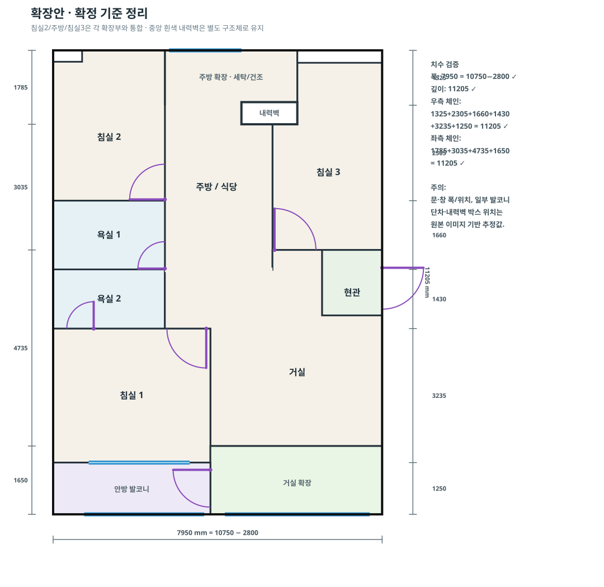

V2와 별도 저장 · 동일 mm 좌표계
중앙 박스 1350×535mm는 BASE와 위치·크기가 같아 보존했습니다. 안방 베란다는 거실 쪽 문으로 출입합니다.
실제 제품/시공사진과 첨부 레퍼런스를 기준으로 색·거칠기·패턴을 디지털 근사했습니다. 모니터와 조명에 따라 실물과 차이가 날 수 있습니다.

SVG의 바깥 사각 테두리는 치수 범위 표시로 처리하고, BASE의 외곽 단차를 유지했습니다. 중앙 박스는 새 구조로 추정하지 않았습니다.